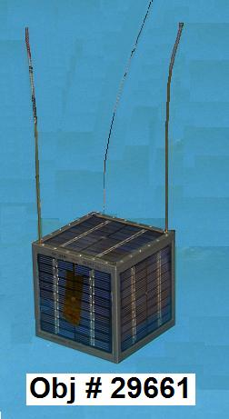
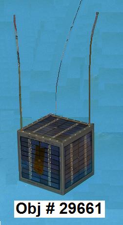
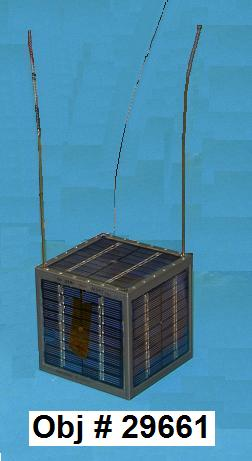
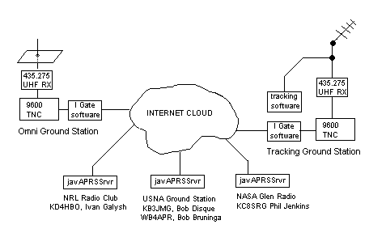

ANDE, RAFT, NMARS, & FCAL Operations
 


US Naval Academy Satellite Lab
Bob Bruninga, WB4APR
ANDE, RAFT, NMARS, & FCAL Operations


US Naval Academy Satellite Lab
Bob Bruninga, WB4APR
ALL ANDE Operations have moved to the ANDE Ops web page. This was the combined 2007 USNA satellite operations page when we had both ANDE and RAFT spacecraft in orbit at the same time. This page is retained for historical purposes. . Similarly, the last few days of RAFT operations were all summarized on the SAVE RAFT WEB PAGE!. .
ANDE Field-Day Operations: ANDE and PCSAT (W3ADO-1) are available for Field Day operations, both operate as standard APRS digipeaters on 145.825 MHz up and down, 1200 baud. . W3ADO-1 may work for a few lucky contacts since it is semi-operational. . But ANDE should be fully operational, though it needs a small beam probably. . The PATH for ANDE is via ARISS just like for the ISS. . For PCSAT the path is VIA W3ADO-1.
RAFT has Re-entered: Deorbit was on 30 May 2007, and thanks to a big effort, the Radar Fence Transponder was demonstrated! . See the SAVE RAFT WEB PAGE!. .
ANDE and RAFT STATUS: . On 6 April 07, PA3GUO restored RAFT from an upset and activated the packet-to-voice synthesizer. . See links below for operations. . RAFT was half way through its mission and would de-orbit in August. . It's uplink was best in the dark. . After 6 April began a period of evening operations for the next few weeks. . Command stations were needed in the Southern USA states from Arizona to Georgia under the Space Radar Fence to help us experiment with RAFT's radar transponder.
ANDE and RAFT Speak. 10 Feb 07: . Anyone can activate the RAFT voice module with a CONNECT RAFT, and then anyone else can send APRS messages to TALK to be spoken, but both downlinks are weak. . Although ANDE also has the same voice circuits, they can only be activated on each orbit by command station, and then, only after ANDE is awakened by user activity on the channel. . Once activated, it speaks anyone's message to TALK. Good luck! . Hear the PE1ITR and DK3WN contact. and others in a voice contest.
Packet-to-Voice Synthesizer Rules:
STATUS 6 FEB 07: For the last week RAFT has been enabled for PSK-31 ops. No joy has been reported. Also, several stations across the southern USA have been listening for the RADAR Fence transponder. PE1ITR succeeded in an even greater challenge, listening for the 4 milliwatt local oscillator of the XP217 Radar Transponder. (see detection) . As of 6 Feb, RAFT was placed back into packet-to-voice transponder mode (though RADAR testing can still continue simultaneously). Hear a sample over Europe from DK3WN.
PCSAT-1: was restored to full operations in constellation with ANDE and RAFT on 1 Jan07 but experienced a reset on 18 Jan due to re-entering eclipse season. PCSAT-1 will not be available again until next October.
ANDE and RAFT and MARScom all involve US Naval Academy Student Projects. RAFT and MARScom are complete student spacecraft and the ANDE comm system was a student project. The 4th satelliite, FCAL, was built at NRL (like the ANDE shell) but FCAL also contains an amateur radio cubesat for comms and telemetry. These four satellites, operating in the Amateur Satellite Service were deployed from Space Shuttle mission STS-116 on 21 December 2006. These missions are short due to their low altitude. Our AMSAT expert, N2WWD predicts ANDE life of 15 months and RAFT only 5 months to May. He was using Astro-Dynamics Environment (ADE) software. See a TV News Video as the students describe their work.
THE 145.825 EDUCATIONAL SATELLITE NETWORK: All APRS packet relay satellites are encouraged to join us on this common satellite frequency (after coordination with the IARU) to help maintain this common space borne relay frequency for the convenience of students and users around the world. ANDE and RAFT join PCSAT-1 as a 3 satllite constellation of relay satellites on this frequency. On 10 January, Pehunesat of Argentina joined the constellation with both voice and packet. UO-11 is still often heard as well. See our Ocean Buoy student project as an example application on this channel. See the LIVE packets on this channel, collected by automated ground stations around the world.
Here are the salient links for our 4 satellites:
RAFT and MARScom Deployed: RAFT and NMARS were deployed (see map) at 0156z on 21 Dec 06 from STS-116. See 600k video, (or 5M original). There appear to be significant torques applied to the picosats. KG4QWC at NRL has counted an initial 83 RPM for NMARS and 39 RPM for RAFT. At this high spin rate, the configuration of the 4' HF long wire antennas is of interest. See a stitched Freeze Frame of the deploy or full size frames 009 and 010. . The initial spin rate quickly decayed as shown below:
FCAL DEPLOYED, ANDE-MAA STUCK IN CAN: 17 hours after launch,
at 1823z just east of
New Zealand, the CAPE-ICU deployed
(see map)
and 40 seconds later the ICU was supposed to separate into
5 pieces (3 parts and 2 satellites). In the photo below you can see that
FCAL floated out of its half as planned, but ANDE-MAA
appears to be stuck in its half of the can (the lower right). The separation ring
is in the middle just a foot or so from the ANDE cannister.

See Movie.
See the Design.
See initial Spin Analysis
5 month Spin Report (.doc)
UPDATE: . ANDE Lives, and RAFT Responds! on the 21 Dec, 2200z pass, RAFT responded to commands and SPOKE, and with all the noise on the channel, ANDE woke up and sent out one packet with temperatures showing a balmy 25 to 28 deg C. ANDE-MAA had apparently drifted out of the can about 31 minutes after deploy and is fully operational (See report).. By 9 Jan, it appears that ANDE has no spin (see plot), and (temps).
Subsequent passes of both spacecraft improved and we gained command of both ANDE and RAFT. Signals are weaker than PCSAT-1 and by mid-day and most systems checked out, we authorized user access on a limited basis. ANDE cooled to -10C on the outside the first full day. But later stabalized to an internal temperarure of about 15 deg C with peaks on the shell of 40 C at the end of a sun-side pass. See the report-2.
RAFT SPIN ANALYSIS: It is easy to hear the high spin rate on RAFT when the downlink transmitter is on. We can turn it on for the XP-217 radar fence transponder or for the PSK-31 downlink or for voice. In all cases, you can hear the spin modulation. Initially the spin was 39 RPM as observed by KG4QWC. Observations on 14 Jan by PA3GUO show it is down to 25 RPM as recorded in this image below and his MP3 file.
LIMITED USE AUTHORIZED: . Users may use these spcecraft in accordance with the current User Service Agreement. Supported modes are:
RAFT Speaks!: Hear samples from PA3GUO, JE9PEL of JF1AJE, DK3WN-1, and DK3WN-2, and PE1ITR. . Users are cautioned that unattended uplinks are not generally authorized and uses must not overlaod the uplink so that command stations cannot get in.
DO NOT TRANSMIT a voice packet to RAFT or ANDE if you cannot hear packets from the spacecraft! The downlink is very weak and we cannot afford anyone transmitting in the blind and blocking command access. With an OSCAR array, even command stations cannot hear RAFT below 10 degrees. Omni stations may only hear it 2% of total pass times during the center minute or so of a rare overhead pass. Transmitting speech packet is ONLY authorized in accordance with the current User Service Agreement.
INITIAL ORBIT RAFT Telemetry from W7KKE, USNA, and VE4NSA: Volts were 8.4 in the sun,
dropped to 7.3 volts by middle of eclipse on first pass over East Coast USA.
We were seeing shut downs (at 6.6V) on each eclipse for the first 10
hours, but now JN1GKZ captured a packet over Japan that shows we are now charged
up enough to make it through eclipse and had been running for 529 minutes. Now
ZL1AOX in New Zealand has captured our first Sun data and we have over 250 mA
of solar current and volts up to 8.7.
Here is screen shot of first TLM over USNA:
RAFT Telemetry History. Individual values: Volts, Solar Current, Battery Current, Load Current, Temperature.
The photo below shows the launchers on orbit ready to spring into action...:

Photo inside the Payload Bay,
On orbit,
Detail view.
Photo of ANDE and FCAL inside the CAPE and ICU
Photo of RAFT and MARScom
Photo of the RAFT launcher
ANDE/RAFT CONJUNCTIONS: The spacecraft separated from the Space Shuttle STS116 on 21 December and were in range of each other for about 15 days and then rejoined to within a few km on 10 Feb about 1400z (in range of each other for 6 days). As RAFT speeds up as it decays faster, the next joint ops will only last only 3 days about 7 March, then again on 26 March, 11 April, 25 April and 5 May. When they are in view of each other, exciting dual hop packet relays are possible as shown in the following graphic:

ANDE and RAFT Science Missions: The NRL science mission of ANDE is to measure the density of the upper atmosphere by precise tracking of the orbit decay by the Maui Laser Ranging Tracking Station. The Comm system provides important telemetry on the attitude and temperature of the spacecraft. RAFT carries a 216.98 MHz receiver/transmitter to demonstrate self-location techniques when it flies through the Space Surveillance Network radar fence across the southern USA. When this experiment is activated, users will hear a 1 second ping when it flies through the fence.
ANDE and RAFT Communications: ANDE and RAFT carry packet radio communications
systems operating in the Amateur Satellite Service and join with other USNA APRS digipeating
satellites such as PCSAT-1 and PCSAT2. ANDE and RAFT will respond to the path alias of
APRSAT and ARISS an other common APRS aliases. This is so that users do not have
to reconfigure their path between satellites or between their ISS groundstation. The
following frequencies are used by these two spacecraft:
ANDE Operations: When ANDE is awake, it has four operating capabilities, telemetry, Digipeating, a Packet-to-Voice Synthesizer and Lasers. It sleeps 90% of the time and only wakes up for 2 seconds out of every 16 seconds to see if it hears any packets. If none, then it goes back to sleep to save power. (it has no solar power system, only primary batteries). Once it awakens, it is useable as a digipeater until 1 minute after the last packet heard. The batteries should last a year.
ANDE Lasers: The lasers are in the near infrared and outside of normal vision, though we could see some "red" though only about like a standard red LED in brightness.. (Thought the lasers are 1 Watt and blinding in the infrared!). They are probably not visible to the eye, but should show up in a CCD camera. The Lasers require a SYSOP to activate and since their main function is to be tracked by the Maui Laser Ranging station, the lasers will probably only be turned on by our volunteer Hawaii command stations. The lasers are nearly omni directional, so the 1 Watt power is dispersed over a large area and weak in any one direction. Visibly, not any brighter than a single standard LED. I doubt any amateur astronomer would be able to see it unless they have a CCD camera. See laser info for details.
ANDE Packet-to-Voice Synthesizer: This experiment is carried on both RAFT and ANDE, but on ANDE, this circuit can only be activated by a SYSOP command station and only on a single-pass-at-a-time basis since it goes back to sleep and resets everything after the pass is over. This circuit on ANDE may only get used if the RAFT one is inoperative.
RAFT OPERATIONS: RAFT has four operational modes. Its primary science mission is to demonstrate the self-location of a tiny satellite in orbit by detecting its own passage through the 216.98 MHz radar fence across the southern USA. The secondary missions are communication experiments in the Amateur Satellite Service and are available to radio amateurs worldwide:
RAFT APRS Digipeater: This simple AX.25 digital repeater is just like the ones flown on PCSAT-1, PCSAT2 and ANDE and also as ARISS on the ISS. It defaults to off, but will be left ON as long as battery state permits. It responds to the common digipeater aliases of "APRSAT" and "ARISS" so that users do not have to frequently change their transmitter settings.
RAFT Voice Synthesizer: RAFT also has the text-to-speech synthesizer so that it can speak packets sent to it. The format for such a packet is standard APRS message format. Simply address your message to the speech synthesizer callsign of TALK. If the voice syhtnesizer is activated, it will speak the packet. It ignores the AX.25 packet header and also the APRS overlaying protocol and converts all of that overhead to simply "XXXXX says:" and then continues with the original packet text converted to voice.
To save power, the voice synthesizer is normally off. But if it has been enabled by the RAFT team, then it is available for activation by anyone. To activate the voice synthesizer for the duration of a pass, any user may initiate a normal 1200 baud packet connection to the RAFT callsign. The "connection" turns on the CONNECTED LED on the spacecraft TNC and this in turn activates the voice synthesizer as long as that person remains connected. Notice that this station cannot then send unconnected APRS voice packets unless he has two packet systems or fakes a disconnect and then begins working in UI mode.
RAFT PSK-31 Transponder: The PSK-31 transponder is a 10 meter SSB receiver on 28.120 to 28.1235 MHz. Any PSK-31 signals in that band will be demodulated to audio on the RAFT spacecraft and transmitted to the gound on the RAFT VHF FM transmitter. This way everyone in the footprint will see the same uplink passband as everyone else. This eliminates any difference in Doppler among all the stations on the uplink. If signals are clean, then as many as 30 simultaneous users my use the transponder.
The PSK-31 transponder is activated just like the voice experiment. If the SYSOP has enabled the transponder, then any connect request from any user to the callsign of RAFT will activate the transponder as long as that station maintains the connection. At the end of the pass, it will time out and turn off agiain. Packet has no function in this case except that the connection is what keeps the PSK-31 transponder ON.
Note: We do not expect great performance in this transponder mostly due to inadequate RFI shielding inside the small 5" cubeasat. To make everything fit, we could not have any metal shielding between all the various modules, and so the sensitive HF uplink receiver is only 1/2" away from the very noisy CPU of the TNC. This creates over 20 dB of digital hash noise floor. So it may take a strong signal to hear anything on the HF uplink. Keep expectations low...
JOINT OPERATIONS: Since RAFT caries an identical packet digipeater as PCSAT-1 and ANDE, users should look for opportunities when one satellite can be used to relay packets through the other. Of course, if too many people try this, then no one will be successful because the users are using 50 watts and the satellites would hve to hear the weak 2 watt signal of the other satellite. But it is possible, especially when the geometry is favorable where one spacecraft is over the ocean and the other one is just barely in view of users. The image below shows a PCSAT-2 to PCSAT-1 double hop.
January 2007 JOINT-OPS: PCSAT-1 is basically inoprative except when in full sun at mid-day in the northern hemisphere due to a negative power budget. But during 2 weeks in January, Sun angles improve and PCSAT-1 will come back to full operation. That will be an exciting time. There will be another such period in mid April. See PCSAT-1.
RAFT Mailbox Experiment: RAFT also has an internal PBBS that could be used for special events or experiments, though it may not have the power budget to keep it on. If anyone has any ideas here, let us know.

SCHEDULING CONSTRAINTS: RAFT operations are constrained by power budget. It has solar panels on all sides and so it should have the same average sun throughout its short mission life. So hopefully it will either work or not. But some modes demand more power than others. Here are the priority of operations:
VOLUNTEER GROUND STATIONS: Since RAFT has no onboard computer for whole-orbit telemetry capture we are dependent on volunteer ham radio ground stations (see typical photo - AA6RR) and (EA8BQD in the Canaries) for telemetry feeds to the APRS Internet system for live distribution. Any APRS station can be a satgate just like they are normally for operation of an IGate. There is no difference.
SETTING UP A SATGATE: You can use any APRS program to feed satellite data to the APRS-Internet system (APRS-IS) in the normal manner like any IGate. But if you dont want to mess with all the APRS system, you can build a simple SatGate using only the ALOGGER program. See building an ALOGGER Satgate. See the status of other SATgates. Click to ( download) Alogger. . You can also set up a satgate using any APRS client software. See JE9PEL's page on how to set up UIview as a satgate.
SIMPLE SATGATE ANYONE CAN DO: Although it appears to take an OSCAR array to bring in ANDE and RAFT packets, we do not expect most satgates to have one. We take advantage of the global distribution of the APRS SATgate system to combine the outputs of dozens of stations so all we need is each station to hear one or two packets, and then we can all see all of them on the APRS internet system. The best antenna for this is on the gound in your backyard. Just make a 57" vertical over a large chicken wire ground plane. This becomes a 3/4 wave (50 ohm) vertical with almost 7 dB of gain above 30 degrees.
No, you won't hear most packets, but you WILL hear a few, a few times a day, and that is what we need. The figure below shows the gain pattern of such an antenna. Combined with the fact that the satellite is 10 dB closer to you when overhead than on the horizon, gives you a total of 17 dB gain advantage to those few packets. Those few packets combined with those few from everyone else should give us good continuous data. Since it is on the ground, it is not that bad of a winter project! No moving parts, no tuning for doppler, and antomatic IGate, and you are done. The GREEN plot is the 3/4 wave compared to the RED which is a 1/4 wave. Make the ground plane screen as big as you can. Maybe 6 feet or more?

RAFT: See a complete description of RAFT. This is just one of many Naval Academy compatible spacecraft and several other compatible satellite projects operating in the Amateur Satellite Service. The following map shows the stations that have volunteered to support the special telemetry downlinks from PCSAT2:

User Service Agreement: RAFT cannot live up to its full potential unless all users use it as designed. Therefore like other Naval Academy Satellites, we ask that all users subscribe to the RAFT User Service Agreement. If you agree to use RAFT in accordance with the guidelines posted there, then you may use the spacecraft.
RAFT TELEMETRY: RAFT generates routine housekeeping telemetry once a minute. There are only 5 telemetry values.
Since only 5 channels are available, we used a trick with the termperature sensors to see other data. If the PSK-31 transponder is on, then the thermister that is transmitted is the Transmitter. If it is normal mode, then the thermister is on the spaceframe.
When decoded, (See Telemetry Equations and format) , here is a screen snapshot of the typical telemetry data. Notice that both RAFT and MARScom show on the same screen.
The following screen capture shows what ANDE telemetry looks like. Notice that there are two columns for the A and B side (ANDE-1 and ANDE-2). Side B reports on the bottom half of ANDE and side A reports the top half. The head of the column shows which packet (00,01,10,11) contains that telemetry. In this capture, ANDE was in the dark because you can see that the graphics to the lower right does not show any solar sensors illuminated. The other graphics shows temperatures, in this case, as a cool blue. Otherwise most of these values are gyberish and not real. The currents in the upper right are HIGH and are shown in RED. NOrmally we expect to see values in the tens of mA. You will see 400 mA if a TX is captured. See more info on ANDE telemetry
EXAMPLE NETWORK DIAGRAM:

Ground Stations can be simple or complex. A simple 19" whip over a ground plane works very well and can see the satellite above about 15 degrees. A full tracking station down to the horizon may get more data, but may not be worth the expense. However, it should be noted that RAFT does not have cross polarized antennas, so there will be nulls in the pattern. But there is a tiny magnet on board that should orient those antnnas along the Earths Magnetic field. The plot below suggests the orientation that a mid-latitude station will see if looking west (or east). The satellite will be mostly horizontal to the south, and tend towards vertical to the North. Since RAFT is deployed from the Shuttle (coming back from the ISS), it will be in an orbit similar to the ISS (just lower and faster)...

FIXED OR AUTOMATED STATIONS AND ANTENNAS: If there are enough ground stations, then trackign stations are not required, since when one station loses it on the low horizon, it should be over another ground station somewhere else. See the plot below comparing the gain of a 1/4 wave whip with a 3/4 wave whip. This is live data obtained from a 1/4 wave and 3/4 wave whip (scaled to GPS size and using the GPS constellation over 12 hours to provide all-sky signals):
Much experimentation in this area is needed. Here is a plot of the theoretical EZ-NEC produced gains of three whip antennas including the path loss due to range. THis shows the 3/4 wave antenna to not begin working until above 30 deg, but I routinely capture some data above 20.... Better than shown here.

Bottom line, whats the best antenna? Depends on how many people are collecting data from which directinos.... There are enough of you and enough different stations for us to find out!
The RAFT comm system operates in the ITU Amateur Satellite Service as described in the Paper on RAFT's operation in the Amateur Satellite Service
DESIGN DETAILS relative to OPERATIONS:
You are visitor:
<== not visible on IE, but NetScape sees it
(was 19,500 at 1600z on 20 Dec 2006)
.
|
|
|
|
{kind=link}
{kind=link}
{kind=link}
{kind=link}
{kind=link}
{kind=link}
{kind=link}
{kind=link}
{kind=link}
{kind=link}
{kind=link}
{kind=link}
{kind=link}
{kind=link}
{kind=link}
{kind=link}
{kind=link}
{kind=link}
{kind=link}
{kind=link}
{kind=link}
{kind=link}